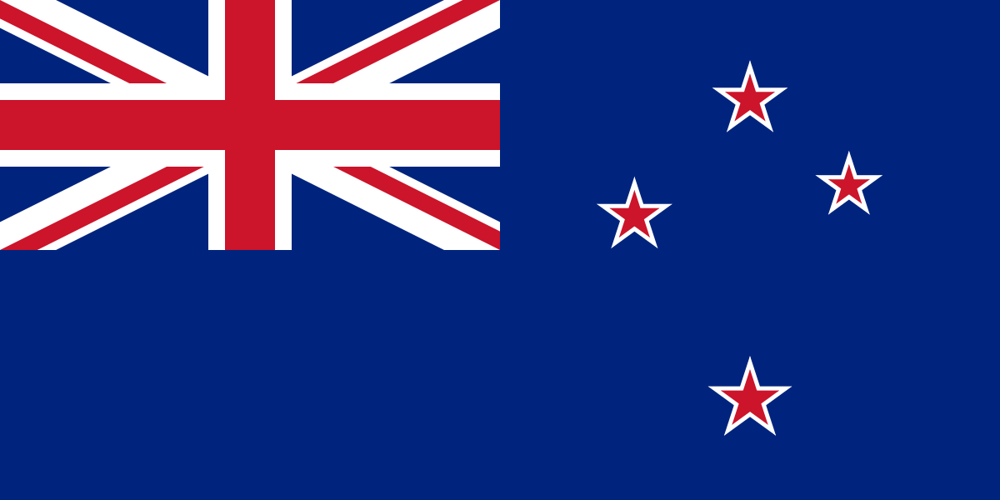

New Zealand
History
Obviously both Australia and New Zealand share a lot of history, seeing as they are both in the the british commonwealth.
The British Commonwealth
The British Commonwealth is the traditional name for the now Commonwealth of Nations popularily reffered to as "The Commonwealth"
Originally the Commonwealth was the entire british empire controlled by whomever controlled the actual crown. In modern times however it's more of a corporation, where the CEO position is given to the current King/Queen
You could even go so far and say that the commonwealth is an olligarchic corporatocracy! (while countries themselves can be democratic olligarchic corporatocracy. Except for the the crown dependencies, poor Jersey)
CGP Gray has made a great image for understanding how the british crown influences the world.

Geography
New Zealand lies in Oceania, in the southern hemisphere. The climate is both cold and wet, similar to Norway, but perhaps their winters are a bit warmer.
The country is filled with beautiful mountains and canyons, green grass, and sheep, lots and lots of sheep. Seriously, there are more sheep in New Zealand than people. That's a lot of sheep.
In many ways New Zealand looks a lot like Norway, and their nature, is where most of their tourism comes from
If you're vistiting New Zealand, you will most likely go to Auckland, as it is decidably the biggest city in New Zealand, with a population of 1.413.700 people. Which is larger than the capital, mind you.
On second place, (in terms of population anyway). is Welligton, the capital, a place known for their coffee, and they take credit for inventing the "flat white" - a coffee with less milk, and the milk being textured, rather than frossy. Whatever that means...
Tourism
New Zealand is a country many filmmakes choose to film in because of its spectacular nature. Movies like 'Lord of the rings', 'Avatar', and 'The Hobbit', are all filmed here, so next time you watch a James Cameron film, assume the amazing landscape is New Zealand
Which isnt really a surprise seeing as James Cameron himself was born here
Suffice to say, a lot of fans travel to New Zealand to see the movie sets, But many people also go hiking, taking trips to mighty volcanoes. And looking at pretty birds, and/or dolphins.
but let's say you're a hardcore Lord of the Rings fan. What can you see?
you can for example go see The Shire.

Or the Waitomo Caves. A beautiful glowing cave which has been a popular tourist attraction since 1904, and maybe even before!